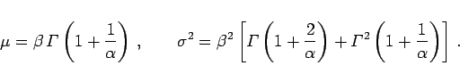
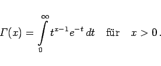

Inhalt Index DeskTop Bronstein

 Wahrscheinlichkeitsrechnung und Mathematische Statistik Wahrscheinlichkeitsrechnung Stetige Verteilungen
Wahrscheinlichkeitsrechnung und Mathematische Statistik Wahrscheinlichkeitsrechnung Stetige Verteilungen


und ihre Verteilungsfunktion durch
| (16.86) |
gegeben sind.
|  | (16.87) |
Mit  wird dabei die Gammafunktion bezeichnet:
wird dabei die Gammafunktion bezeichnet:
|  | (16.88) |
In (16.86) ist  der Form- und
der Form- und  der Maßstabsparameter (s. die folgenden zwei Abbildungen):
der Maßstabsparameter (s. die folgenden zwei Abbildungen):

Bemerkungen:
| (16.89) |